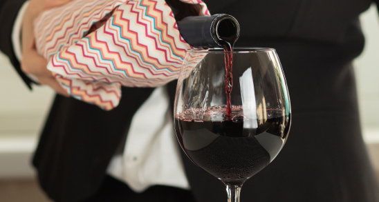

The Art of Pairing Wine and Food: Expert Tips for a Perfect Match
One of the keys to creating a memorable event menu is harnessing the vibrant flavors of seasonal produce. Whether you're planning a wedding, corporate gathering, or intimate dinner party, incorporating fresh, seasonal ingredients can elevate your menu and delight your guests' palates. Here's how to make the most of seasonal flavors in your event menu:

1. Consider the Flavor Profiles:
When pairing wine and food, consider the flavor profiles of both the dish and the wine. Look for
complementary or contrasting flavors that enhance each other. For example, a rich, buttery Chardonnay pairs
beautifully with creamy pasta dishes, while a crisp, acidic Sauvignon Blanc complements seafood and salads.
2. Match Intensity:
Match the intensity of the wine with the intensity of the food. Light-bodied wines like Pinot Noir pair well
with delicate dishes such as roasted chicken or grilled fish, while full-bodied wines like Cabernet
Sauvignon are better suited to hearty dishes like steak or braised meats.
3. Balance Sweetness and Acidity:
Balance the sweetness and acidity of the wine with the flavors of the dish. For example, a sweet Riesling
pairs well with spicy Asian cuisine, as the sweetness helps to offset the heat. Similarly, a crisp, acidic
wine like Sauvignon Blanc can cut through the richness of creamy dishes like risotto or Alfredo pasta.
4. Consider the Sauce:
When pairing wine with a dish, consider the sauce or dominant flavors in the dish. For example, a
tomato-based pasta sauce pairs well with a medium-bodied red wine like Chianti, while a creamy mushroom
sauce complements a rich, oaky Chardonnay.
5. Think Regionally:
Consider the regional cuisine when choosing wine and food pairings. Wines from a particular region often
pair well with the local cuisine, as they are made to complement each other. For example, Italian Chianti
pairs beautifully with classic Italian dishes like pasta and pizza, while Spanish Tempranillo is a natural
match for paella and tapas.
6. Experiment with Texture:
Experiment with pairing wines that have different textures with the texture of the food. For example, a
sparkling wine like Champagne or Prosecco pairs well with crispy, fried foods as the bubbles help to cleanse
the palate. Similarly, a velvety Merlot pairs well with tender, slow-cooked meats like lamb or beef.
7. Consider Tannins and Fat:
When pairing wine with fatty foods, consider the tannin levels in the wine. Tannic red wines like Cabernet
Sauvignon or Syrah pair well with fatty meats like steak or lamb, as the tannins help to cut through the
richness. For lighter dishes, opt for a wine with lower tannins like Pinot Noir or Grenache.
8. Don't Forget About Aromatics:
Consider the aromatic components of both the wine and the dish when pairing. Aromatic white wines like
Gewürztraminer or Viognier pair well with spicy or aromatic dishes like Indian curry or Thai cuisine, as the
floral and tropical fruit notes complement the bold flavors.
9. Experiment and Trust Your Palate:
Ultimately, the best way to learn about wine and food pairing is through experimentation. Trust your palate
and don't be afraid to try new combinations. Keep a journal of your favorite pairings and take note of what
works well together. Over time, you'll develop a better understanding of your own preferences and how to
create the perfect match.
10. Enjoy the Experience:
Above all, wine and food pairing should be an enjoyable and rewarding experience. Don't get too caught up in
the rules – the most important thing is to savor the flavors and enjoy the company of friends and loved
ones. Whether you're hosting a formal dinner party or enjoying a casual meal at home, the art of pairing
wine and food adds an extra layer of enjoyment to any dining experience.
In conclusion, mastering the art of wine and food pairing takes time and practice, but with these expert tips, you'll be well on your way to creating perfect matches that elevate any meal. By considering flavor profiles, matching intensity, balancing sweetness and acidity, and experimenting with different combinations, you can create unforgettable dining experiences that delight the senses and leave a lasting impression. Cheers to the perfect pairing!